Basic Rails Practice#1
Table of Contents
- 1. 제일 먼저 할것은 hello world page
- 2. css,js,image사용법 (bootstrap의 적용, jquery의 적용: ajax)
- 2.1. [ 이론 ] css,js 사용법과 나의 기준
- 2.2. [ 실전 case1: bootstrap.scss, jquery 전체 page사용하기 ]
- 2.3. [ 실전 case2: d3.js and d3.scss를 특정 page에 사용하기 ]
- 2.4. [ 실전 case3: 전체 page에 적용되고 내가만든 file을 사용하는 경우 ]
- 2.5. [ 실전 case4: font awesome(아이콘) 전체 page 적용
- 2.6. [ 실전 case5: bootstrap-icons 전체 page적용
- 2.7. 최종 정리
- 2.8. 최종 정리2
- 2.9. 최종정리3
- 3. application layout 만들기
- 4. static pages 만들기 - navigation menu
- 5. [devise gem]으로 로그인 만들기
- 6. rails_admin 관리자 페이지 만들기
- 7. table 만들기와 pagenation 구현하기
- 8. table 갱신하기
- 9. d3 or c3 chart or chart.js 구현하기
- 10. sidekiq, whenever gem 사용법
- 11. [부록] webpacker-bootstrap settings
- 12. [부록] turbolink와 jquery
- 13. [부록] ajax 사용법 1
- 14. [부록] ajax 사용법 2
- 15. [부록] link_to helper 사용법
- 16. [부록] form_for helper사용법
- 17. [부록] 지도 관련 사용법
- 18. [부록] I18n 사용법
1 제일 먼저 할것은 hello world page
rails를 설치하고, CI/CD를 위한 환경이 조성되었다면, hello world를 출력하는 것이다. 이것은 간단하게 routes와 controller만 사용해서 출력하기로 한다. route에서는 root 경로만 설정해준다.
rails new hellodemo –database=mysql 로 project를 만든다. (database.yml처리를 mysql 맞게 해준다.
1.1 route 설정
route를 설정하기 위해서 route file을 연다. root를 사용해서 아래와 같이 application controller의 hello라는 action으로 mapping한다.
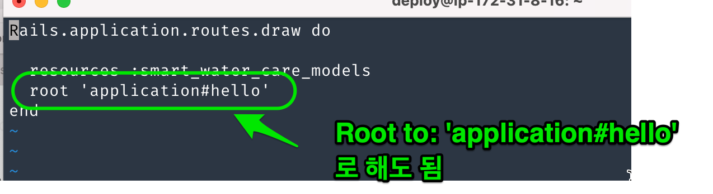
Figure 1: rt1
1.2 controller의 설정
application controller에서는 action에 해당하는 hello method를 작성하지만, 실제 view와 연결짓지는 않는다. render함수의 정확한 용법은 모르겠다. 하지만, 이렇게 관습적으로 사용한다.
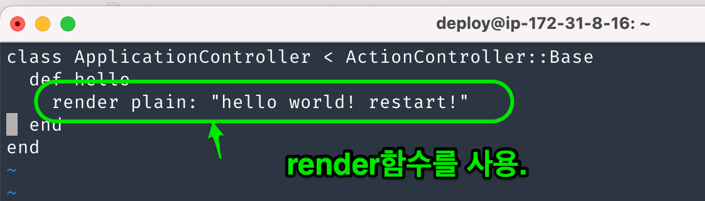
Figure 2: render1
1.3 실행
local에선 별도의 rails db:migration이나 rails assets:precompile을 하지 않아도 된다. 왜냐면, db와 css,js를 사용하지 않기 때문이다. 그냥 rails s만 하면 된다. server는 cap production deploy로 release를 발행한다.
2 css,js,image사용법 (bootstrap의 적용, jquery의 적용: ajax)
어떤 page작업을 하더라도 css와 js가 사용된다. 둘의 사용이 능수 능란해야 한다. webpacker에 대한 설명은 맨아래에 따로 두었다. 여기서는 css와 js 사용법만을 얘기한다. css와 js를 사용하는 이론적인 것을 설명한후, 실제 test과정을 기술하겠다.
2.1 [ 이론 ] css,js 사용법과 나의 기준
css와 js를 만들 때의 기준은 첫번째 사용범위, 두번째 어떤 것을 사용할 것인가의 문제다. 어떤것을 사용하느냐에 따라 pack파일 기술이 달라진다. 이 두가지를 간략히 설명하겠다.
사용 범위에 따른 기준 (packfile의 naming)
전체 vs 부분
전체 page에 공통적으로 적용되는가? 아니면 controller가 다루는 page들에만 한정해서 적용 되는가? 특정 page에만 적용 되는가? default로 전체 page에 공통적으로 적용되는 것은 이미 적용되어 있다. application.html.erb파일에 보면 application.js라는 pack과 application.scss라는 pack은 공통적으로 모든 page에 적용된다. 그래서 전체 page에 적용되는 것은 application.js와 application.scss에 포함시켜야 한다.
controller과 관리하는 pages 혹은 특정 page에만 적용 되는 경우
controller가 다루는 page들에만 적용된다면, Controller명.scss나 Controller.js로 파일을 pack안에 만든다. 특정 page에만 적용되는 js나 scss의 경우 Controller명Action명.scss, Controller명Action명.js를 /pack안에 만든다.
만들어진것 vs 만들어서 (packfile의 구조)
만들어진것을 사용(package)하느냐, 만들어서 사용하는냐에 따라 pack파일의 기술 방법이 다르다.
만들어진것(package)를 사용
yarn으로 package를 설치하고 사용해야 한다. 설치하는 방식은 "yarn add package명" 을 webapp의 home에서 실행 해준다. 그러면 yarn은 webapphome/ node_modules라는 곳에 package를 설치한다. yarn이란것은 아래 [부록]에서 별도로 설명하겠다. 이렇게 설치된 package를 pack에 기술하기 위해선, import라는 지시어를 사용한다. import package명/js의 위치로 기술해서 사용한다. 실제 예제에 보면, js를 import한 후 start() 를 사용하는 경우를 볼 수 있는데, 그것은 초기화 과정이다. 보통은 필요없다.
만들어서 사용
만일 우리가 만든 css나 js가 다른 page에서 사용되는 일종의 library같다면, js라는 폴더, stylesheet라는 폴더에 넣은 후 pack파일에 import해서 사용하면 된다. 마치 위에서 만들어진 package를 사용하는 것과 동일하다. 그런데 내가 만든 css나 js가 재사용이 안되고 그 page에만 적용된다면, pack파일에 직접 기술한다.
case 시나리오
- (1) 전체 page에 적용되고 이미 만들어진 package를 사용하는 경우 (bootstrap scss와 jquery js처리)
- (2) 특정 page에 적용되고 이미 만들어진 package를 사용하는 경우 (bootstrap scss와 jquery js처리)
- (3) 전체 page에 적용되고 내가만든 file을 사용하는 경우
- (4) 특정 page에 적용되고 내가 만든 file을 사용하는 경우
2.2 [ 실전 case1: bootstrap.scss, jquery 전체 page사용하기 ]
- (1) 전체 page에 적용되고 이미 만들어진 package를 사용하는 경우 (bootstrap cs와 jquery js처리) 이미 만들어진 package를 사용한다. 그러면 우선 package를 설치한다. bootstrap을 yarn으로 설치해본다. jquery도 yarn으로 설치한다. bootstrap5부터는 javascript는 바닐라 js이기 때문에 package를 가져다 사용하는 것에 큰 의미가 없어 보여서 jquery.js를 사용한다.
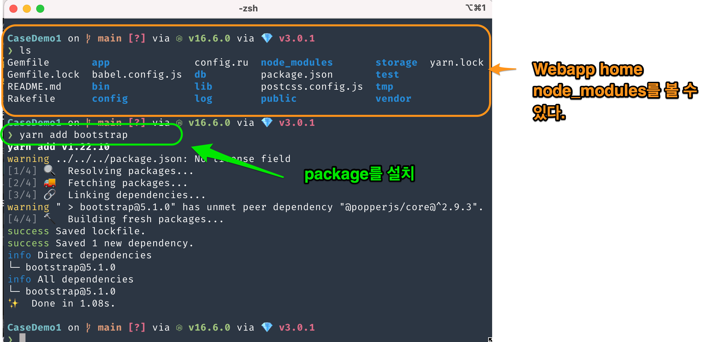
Figure 3: case1_1
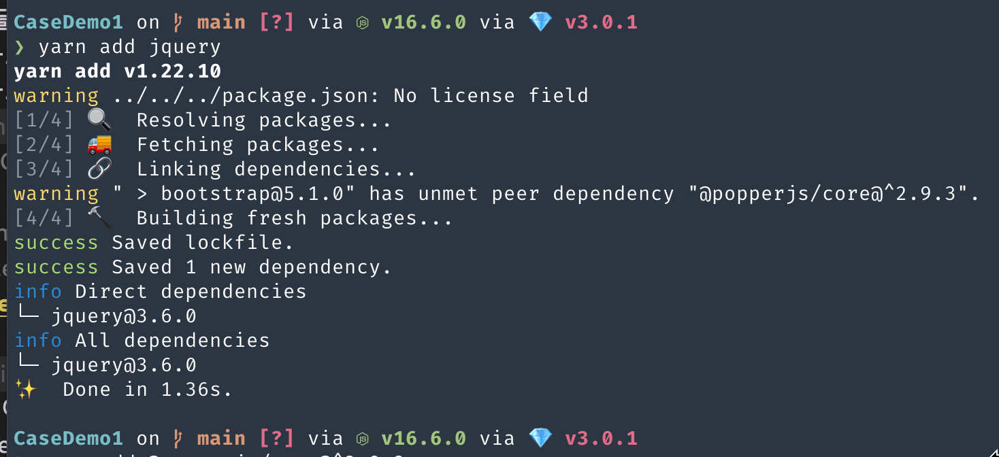
Figure 4: jquery
전체 page에 적용된다. 따라서 application.js, application.scss라는 pack파일에 jquery의 js와 bootstrap.scss파일을 import하면 된다. node_modules folder에서 jquery, bootstrap이 있는지 확인하고, 있다면 지원하는 bootstrap.scss와 jquery.js의 위치를 파악한다. 위치를 파악하는 이유는 import에 경로를 기술하기 위함이다.
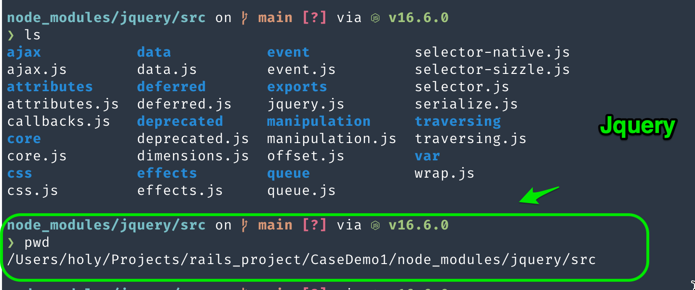
Figure 5: case
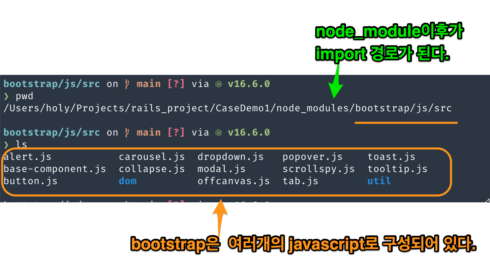
Figure 6: case1_2
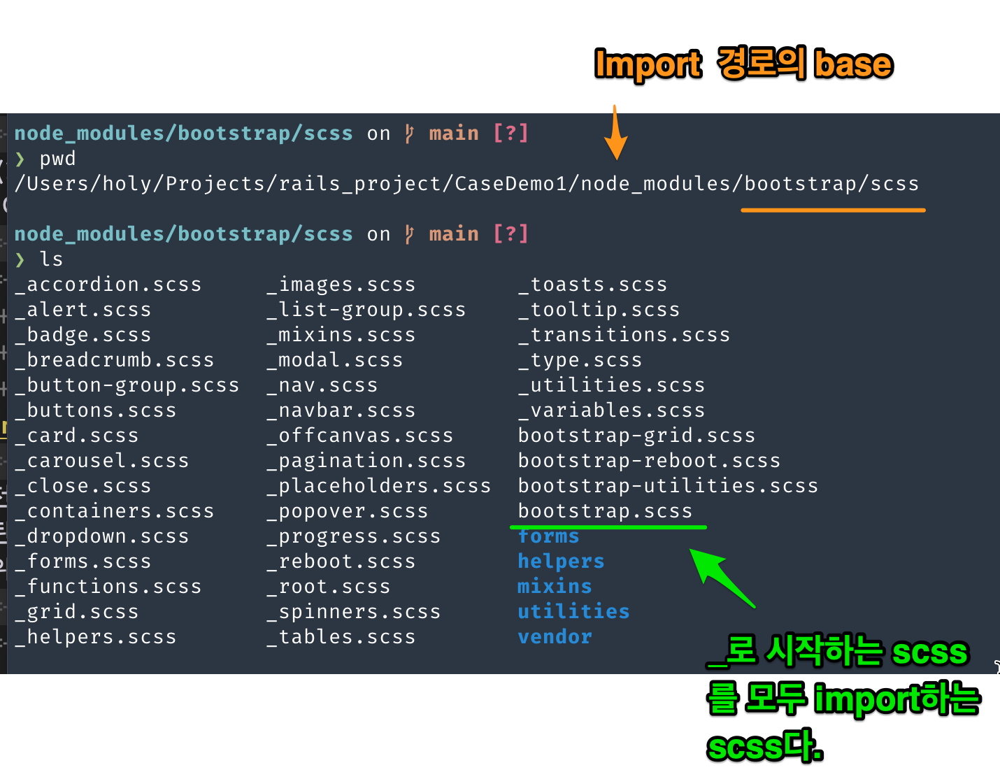
Figure 7: case1_3
- import 위치
요약하면 js위치: jquery/src/ajax.js bootstrap/js/src/alert.js, bootstrap/js/src/button.js … scss의 위치: bootstrap/scss/bootstrap.scss
- pack파일에 적용
이것을 pack파일에 적용 시켜보자. 전체 page에 적용되기 때문에, application.scss와 application.js에 import하면 된다. javascript_pack_tag나 stylesheet_pack_tag를 layouts/application.html.erb에 적용해야 한다. rails 6에서는 default이긴 하지만, 좀 다르다. scss는 asset을 이용하고 javascript만 webpack을 이용하기 때문이다. 난 webpack에서 모든것을 관리하기 때문에 변경을 해줬다.
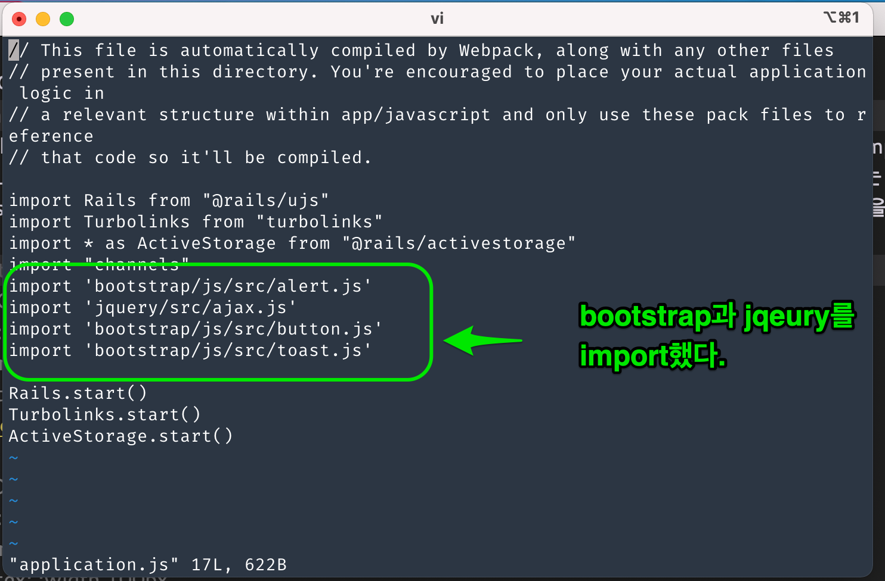
Figure 8: case1_2js2
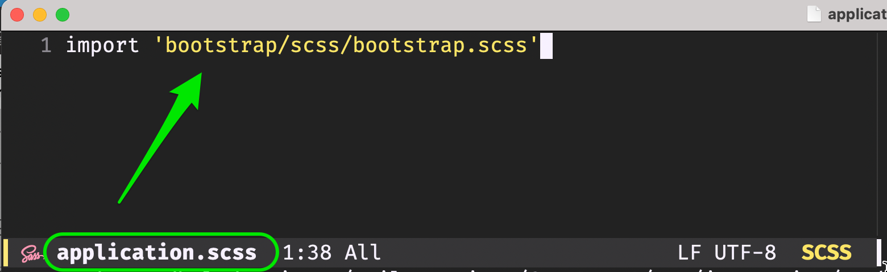
Figure 9: case1_4
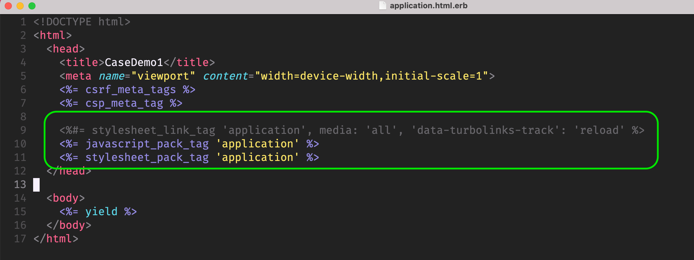
Figure 10: case1_6
Test1 [scss test]
- button을 만들어보자(scss테스트)
- 동작확인 (아래 2번째와 같이 제대로 된 동작을 하지 않는다.)
- 뭐가 문제인가? debug 어떻게 debuging할 것인가?
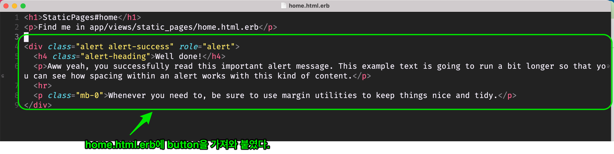
Figure 11: case1_7
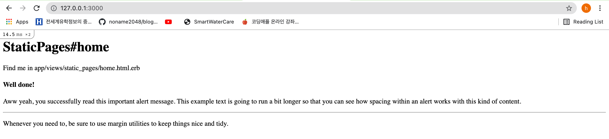
Figure 12: case1_8
[문제 해결] scss에서 import는 @import를 사용해야 한다.
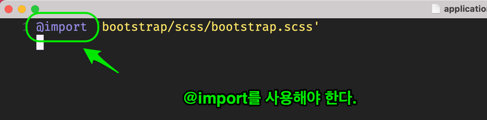
Figure 13: case1_9
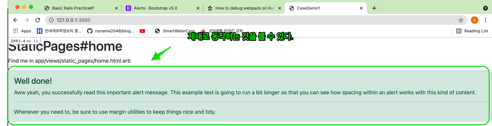
Figure 14: case1_10
Test2 [js test]
jquery를 테스트 해보자. jquery에서 ajax를 load했기 때문에 ajax를 테스트 해볼려고 한다. ajax는 테스트가 힘들어 위에서 import를 jquery.js로 바꿔서 모든 jquery를 사용할 수 있게 바꾸고 테스트한다. 예제코드는 다음을 참조했다. https://www.w3schools.com/jquery/jquery_animate.asp
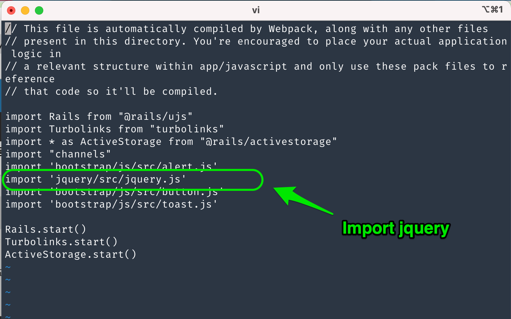
Figure 15: case2_jquery
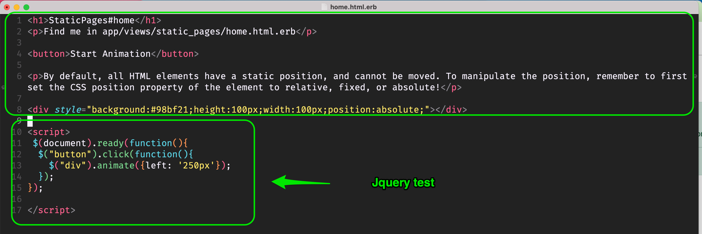
Figure 16: case1_js4
[정상동작] 아무 문제 없이 동작하는 것을 확인했다.
2.3 [ 실전 case2: d3.js and d3.scss를 특정 page에 사용하기 ]
- d3를 yarn으로 설치하자. (yarn add d3)
- d3의 설치 경로를 살펴보자. dist와 src에 js가 있다. 난 dist/d3.js를 import하기로 했다.
- static_pages_home.js란 pack을 만들자.(app/javascript/pack/ 에 만든다)
- 만든 pack에 d3를 import한다. (import 'd3/dist/d3.js')
- pack을 page에 include한다. (javascript_pack_tag 'static_pages_home')
- pack을 만든다.
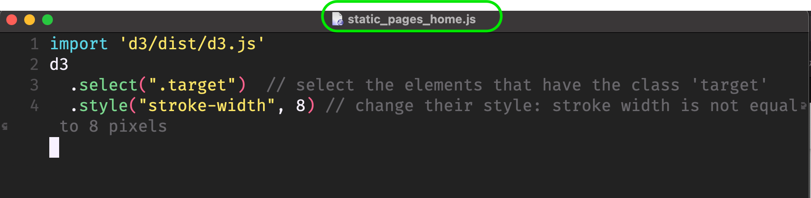
Figure 17: pack을 만든다.
view에 pack을 추가시킨다.
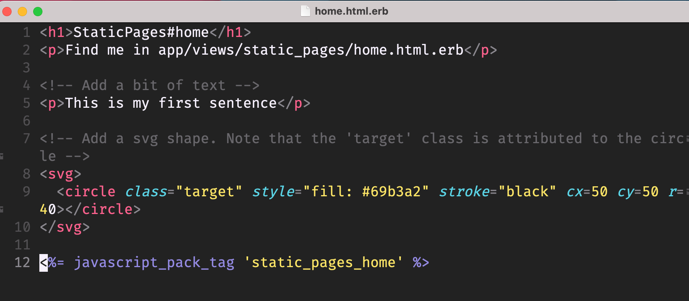
test 결과 [ js가 적용된것을 볼 수 있다.]
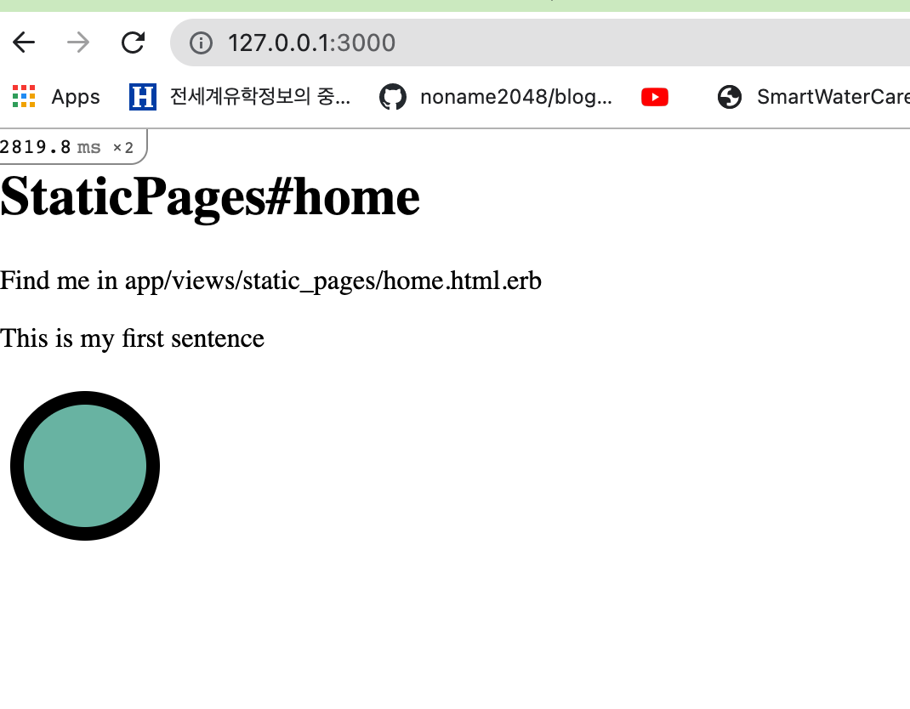
2.4 [ 실전 case3: 전체 page에 적용되고 내가만든 file을 사용하는 경우 ]
내가 만든 css와 js가 전체 page에 적용한다는 것은, 라이브러리 모듈이라고 생각하면 된다. 그래서 js나 stylesheet폴더에 파일이 있고 그것을 application.scss와 application.js에서 import해서 사용하는 것을 의미한다.
2.5 [ 실전 case4: font awesome(아이콘) 전체 page 적용
적용1
- (1) yarn add font-awesome 으로 설치한다.
- (2) import location을 찾는다.
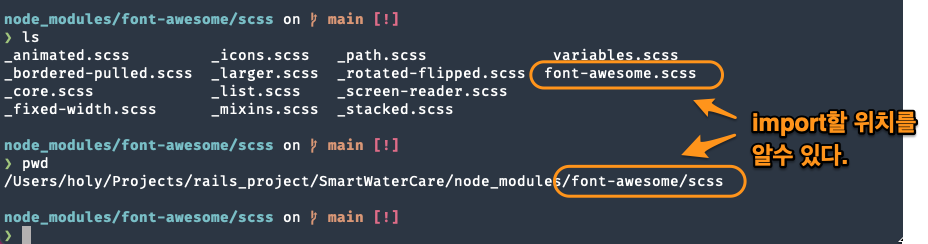
Figure 20: case4
scss란 폴더가 따로 있어서, import위치를 예측할 수 있다. /font-awesome/scss/font-awesome.scss가 import할 대상이다. 이것은 application.scss pack에 import한다.
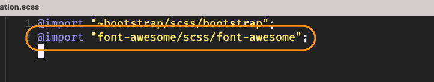
Figure 21: case4
문제점
이렇게 하면 제대로 동작하지 않는다. 에러가 난다. 인터넷에서 찾은 방식을 사용해 보자.
다른 방식
- yarn add @fortawesome/fontawesome-free
- import "@fortawesome/fontawesome-free/css/all" 을 application.js에 설치한다. => 이상없이 된다.
2.6 [ 실전 case5: bootstrap-icons 전체 page적용
- yarn add bootstrap-icons
- import 'bootstrap-icons/font/bootstrap-icons.css' in application.js pack
2.7 최종 정리
내가 생각한 방식은 "간단하게 하자"라는 모토에서 벗어나지 않는다. 간단하게 하기 위해서 생각한건 다음과 같다.
- 모든 page에 적용되는가? => application.scss,와 application.js팩들에 기술하고, layouts/application.html.erb에 가져다 쓴다.
- 일부 page에만 적용되는가? 여러 page에 적용되는가? => 모두 controllerAction.scss, controllerAction.js라는 pack에 기술한다. 즉 page별로 적용한다. 물론 내가 만든 scss나 js가 library module처럼 여러 페이지에 사용된다거나, d3같은 차트관련해서 몇몇 page에서만 사용된다고 할 지라도 따로 pack을 만들고, 해당 page에 include해서 사용한다. 이런 유혹을 느낄수 있다. 여러 페이지에서 사용된다면 page마다 동일한 코드를 중복 사용하는 문제가 생기는것이기 때문에 js폴더나 styles폴더에 해당 라이브러리를 만들고, pack에서 import해서 쓰는게 맞다고…물론 맞는 얘기다. 그런데 지금처럼 신경쓸 게 많을때는 단순하게 가야 한다. 단순하게 가기로 했다.
- [단순하게] 모든 page에 적용되는게 아니라면, pack에다 직접 기술한다.
- 아래 module들은 전체 page에서 사용될 확률이 높은 것들이다.
- bootstrap
- font-awesome(아이콘 사용을 위해)
- lodash, underscore (js내의 array같은 collection사용을 위해)
- jquery
- 아래 module들은 전체 page에서 사용될 확률이 높은 것들이다.
- 일부 page에서 사용
- d3
2.8 최종 정리2
import의 사용법
- yarn을 사용한 경우 node_modules에서 설치된 package의 js와 scss의 위치를 파악한다. js: import 'module/js/index.js' 처럼 기술 한다. scss: @import로 동일하게 기술한다.
- 자체 만든 library 경우 pack폴더를 기준으로 한다. import '../js/mylibrary.js'와 같이 한다.
2.9 최종정리3
최종적으로 bootstrap과 jquery는 application.js와 application.scss에 있어서 bootstrap과 jquery, awesome font, bootstrap-icons를 사용할 수 있게 해야 한다.
3 application layout 만들기
- application layout에 대해서
모든 page의 layout(와꾸, 기본틀)를 잡아주는 page다. app/views/layouts/application.html.erb파일이다. 여기서 해야 할 것은 모든 page의 공통적인 것을 기술한다. 공통적인것은 header와 footer를 의미한다. header에는 navigation menu bar가 들어가고 footer에도 menubar가 들어간다. 특정 page에는 side menu bar가 들어갈수도 있다. 어떻게 design하느냐에 따라 달라진다.
application.js에서 bootstrap과 jquery를 사용하게 setting했기 때문에 bootstrap의 header와 footer를 사용하기로 한다.
3.1 실제 구현
- bootstrap5 homepage에서 examples를 본다. 마땅한것이 있다면 source를 보고 copy해서 application.html.erb에 yield사이로 붙인다. 이게 전부다.
partial page의 사용
page는 보통 html tag로 되어 있는데, 보기에 복잡하다. 이것은 관리가 힘들다는 것이다. 그리고 보통 다른곳에서 source를 가져와 사용하기 때문에 따로 분리할 필요가 있다. 그래서 온전히 하나의 page를 작성하는 경우는 드물고, partial page로 나눠서 작성하고 관리한다. application layout도 다르지 않다.
- partial page만드는 법
header와 footer를 partial page로 만들 것이다. layouts폴더에 _header.html.erb와 _footer.html.erb라는 2개의 파일을 만든다. 만든 파일에 긁어온 html을 붙여넣거나 직접 작성한다.
partial page 적용
만든 partial page를 application.html.erb에 적용한다. 적용 방법은 다음과 같다. <%= render 'layouts/header' %> <%= render 'layouts/footer' %>
결론
navigation bar를 만드는 방법은 좀 복잡하다. 단순히 bootstrap을 copy & paste하더라도, class의 의미를 이해해야 한다. 지금 작성하는 시점에서는 대충 알지만, 나중에는 까먹을것이 분명하기 때문이다.
4 static pages 만들기 - navigation menu
4.1 static pages 개요
- static page란?
web page를 만들 환경이 다 되었다면 기본적으로 해야할 것이, static pages들을 만들어야 한다. static page란 건, db를 사용하지 않고 동적으로 만들어지지 않는 page를 말한다. static page에는 대략적으로 다음과 같은 것이 있다.
static page종류
- (1) home
- (2) help
- (3) about
- (4) contact us
- (5) news
- (6) support
4.2 [1] static pages 만들기
1. rails g controller StaticPages home help about contact로 만든다. [ 참고로 Controller, Model 모두 camel case로 표기한다. 다만 Controller는 복수를, Model은 단수를 사용한다.]
home page 작성
- view 작업
home page를 작성한다. 만일 작성할 page가 많다면 partial page를 사용한다.
routing작업
root to: 'static_pages#home' 추가
연결작업
layouts/application.html.erb에서 navigation을 만든 경우, home을 연결해야 한다.
about page 작성
5 [devise gem]으로 로그인 만들기
5.1 devise란?
회원가입, login, password관련 처리를 gem으로 할 수 있다. session관련 처리뿐만 아니라, url도 만들어주고, db도 만들어 주며, view도 만들어 준다. session이 뭔지를 알아야 한다. session은 공식적으론 cookie의 일종이다. client가 server에 연결할 때 server가 key value값을 만든다. 이것을 session이라고 부른다. server는 만든 session을 client에 전달하고 client는 해당 browser 쿠키 보관소에 그 값을 가지고 있다가, 다시 동일 서버에 접근할때 저장된 cookie값을 동봉해서 보낸다. 그러면 server는 cookie로 사용자를 판단할 수 있게 된다. 이 과정을 구체적으로 사용자 인증과 결부하여 살펴보면 다음과 같다. client가 회원가입 시, server에 session이 만들어지고 저장된다. 그리고 client가 login시 ,server는 session을 가져와서 client에게 보낸다. client가 탈퇴를 하게 되면 저장된 session은 삭제된다. devise는 이런 session처리를 알아서 자동화 한다. session은 user_signed_in?, current_user,user_session이란 심볼로 대신한다. devise 설치는 이 모든 것을 다 만들어준다. 만들어준 이 모든 것을 논리적 의미에 따라 session 심볼들을 적절히 사용하는 것이 devise gem을 사용하는 방식이다.
5.2 devise 설치 과정
devise를 설치하면, routing, model,view, controller 관련된 모든것을 설치해야 한다. 나누어서 설명하겠다.
[1] Gemfiles에 devise gem 추가
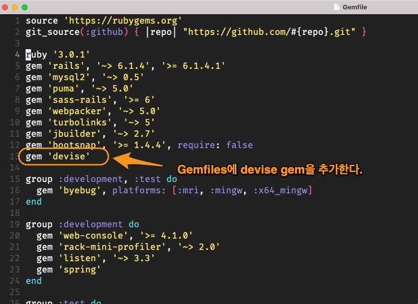
Gemfiles에서 gem 'devise'만 할 경우, rails 4나 5에 맞춰서 설치된다는 얘기가 있다. rails 6에 맞춰야 하기 때문에 다음과 같이 입력해도 된다.
gem 'devise' git: 'https://github.com/heartcombo/devise.git'
- [2] bundle install을 실행한다.
[3] rails g devise:install를 실행한다.
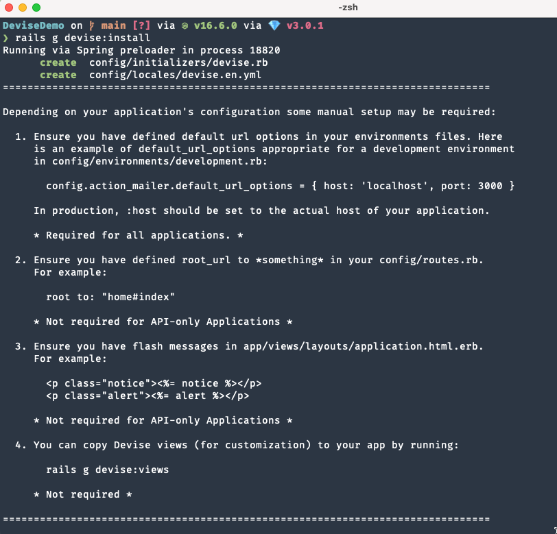
- 4) config.action_mailer.default_url_options를 environments/development.rb에 설정한다. mail template에 대한 URL을 만들어준다고 한다. 보통 해도되고 안해도 된다.
- 5) root, to: 'home#index'가 반드시 있어야 할 필요는 없다.
6) layout/application.html.erb에는 notice와 alert tag를 삽입하면, session이 만들어질때나 유지될때 메시지가 출력된다. 하자
<p class="notice"><%= notice %></p> <p class="alert"><%= alert %></p>
- 7) railg g devise:views : view/devise라는 폴더가 만들어지면서 여러 page들이 만들어진다.
- 8) rails g devise User : user model을 만든다.
9) migrate file에서 t.string :username으로 사용자 이름 field를 추가한다.
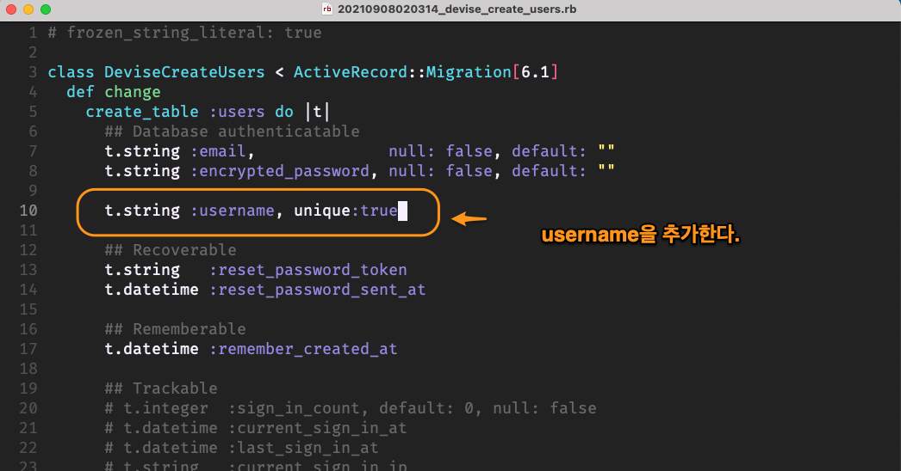
- 10) rake db:migrate 로 db에 table을 만든다.
11) routes 파일을 보면 devise_for users라고 만들어진다. 어떤 URL이 있는 지 확인하자.
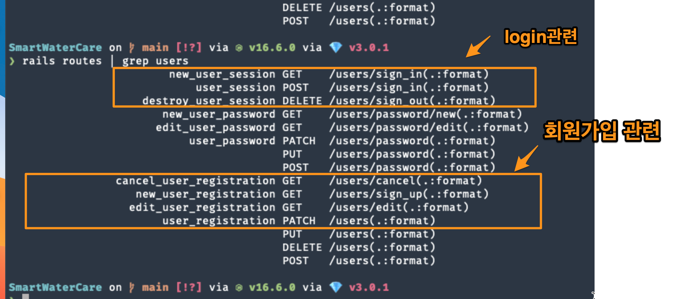
- 12) rake routes | grep users
- 13) 위에서 확인해야할 것은 다음과 같다.
- users/sign_up :회원가입 url
f- users/sign_in : 로그인 page
- url/users/sign_up으로 들어가서 회원가입을 작성 한다. -> 작성이 끝나면 login되면서 home으로 url이 이동된다.
- 다시 url/users/sign_up을 하면 login이 이미 된 상태라서 회원가입창이 나오지 않고 다시 home으로 이동된다.
navigation에 있는 sign in, sign up의 경로를 맞춰줘야 한다. application layout에 있는 navi menu에 sign-in과 sign_up이 있는지 확인한다. 없다면 만든다. 아래는 login 아이콘과 signed up 아이콘이 있는 button이다. 자주 사용되서 가져왔다. font awesome icon을 사용했다.
<ul class="nav navbar-nav ml-auto"> <li class="nav-item"> <a class="nav-link" href="#"><span class="fas fa-user"></span> Sign Up</a> </li> <li class="nav-item"> <a class="nav-link" href="#"><span class="fas fa-sign-in-alt"></span> Login</a> </li> </ul>
- 14) [ navigationbar에서 signup과 login의 link를 알맞게 연결한다. ]
15) [ login 상태에 따른 처리도 해야한다. ]
login 상태에 대한 처리라는 것은 다음과 같다. 만일 login이 되었다면, log out버튼만이 보여야 한다. login이 안 되었다면 log in과 sign up 버튼이 보여야 한다. 이것은 다음과 같이 구현한다.
<% if user_signed_in? %> <li class="nav-item"> <%= link_to destroy_user_session_path, class: "nav-link" do %> <!– <span> –> <i class="fas fa-sign-out-alt"></i> Log Out <!– </span> –> <% end %> </li> <% else %> <li class="nav-item"> <a class="nav-link" href="/users/sign_in"><span class="fas fa-sign-in-alt"></span> Login</a> </li> <li class="nav-item"> <a class="nav-link" href="/users/sign_up"><span class="fas fa-user"></span> Sign Up</a> </li> <% end %>
PS: 위에서 link to는 a태그와 같이 link를 걸지만, 그안에 class속성과 icon을 넣을 수 있다. 그 방식은 tip이라고 할 수 있다.
16) [ 에러 발생 ] logout시 session을 지울때 method를 delete로 해서 server로 전송하는게 안된다. 어떤 방식을 써도 다음과 같은 에러가 발생한다.
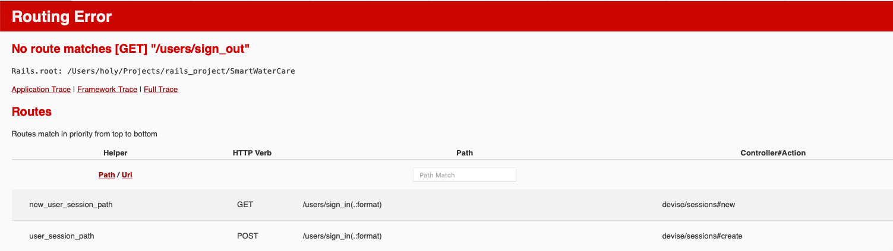
17) [ logout 문제 해결 방법 ]
- (1) <%= link_to "logout" , destroy_user_session_path %> 로 한다.
- (2) (1)을 수정해서 <%= link_to destroy_user_session_path, data:{method: "delete"}, class: "nav-link" do %>로 한다. 그런데 method: "delete"가 먹지 않는것같다. 즉 계속 :get으로 연결한다. 그래서 난, (3)에서 signed out을 :get으로 변경했다.
- (3) config/initializers/devise.rb에서 config.sign_out_via = :delete로 되어 있다면 :get으로 변경한다.
18) username항목 추가
db:migrate하기 전에 migrate파일에서 username을 추가했었다. 이 부분이 회원가입과 login시에 포함되어 있지 않다.
회원 가입 화면 처리
우선 회원가입 page에서 username을 추가 시키자. 회원 가입 page는 devise/registration/new.html.erb에서 다음과 같이 추가한다.
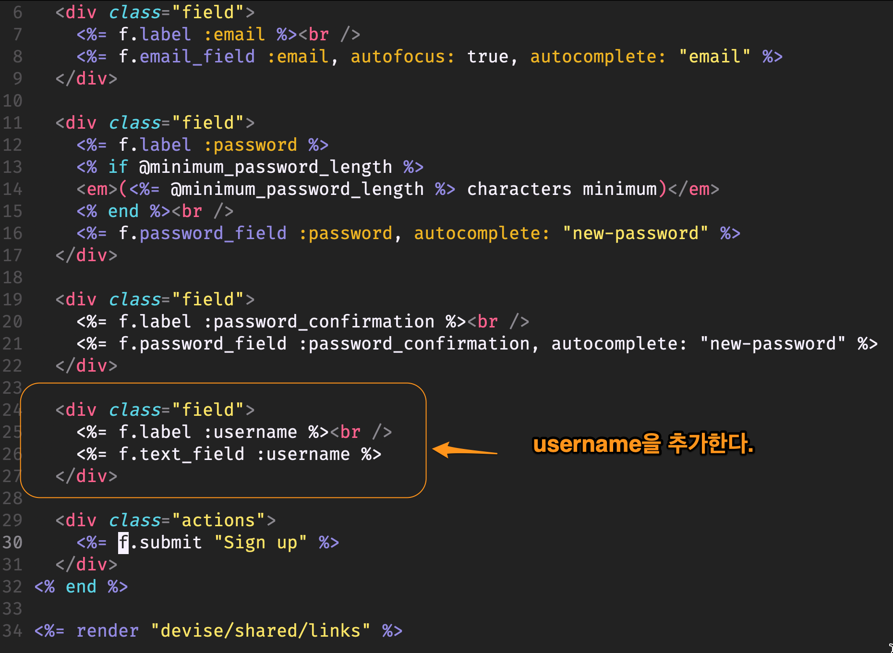
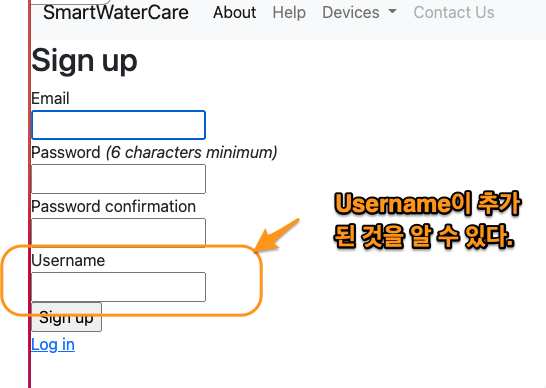
Figure 28: sign up
이렇게 page를 만든후에 test해본다. signup을 눌러서 회원가입 form에 username이 입력 가능한지 알아보고, 가입을 해본다. 가입이 되었다는 말은 form의 정보가 server에 전송되어서 db에 저장된것으로 생각한다. 그러나 값은 저장되지 않았다. 확인하기 위해선, rails c를 사용해서 console로 진입한다. rails c를 사용하는 이유는 한가지! Active Record(db table을 객체화하는 framework)를 사용해서 db의 내용을 확인할 수 있기 때문이다. rails c로 console로 들어간후 User.last로 회원가입시 내가 입력한 username이 db에 저장되었는지 확인해 보자. 저장이 되지 않았음을 알 수 있다.
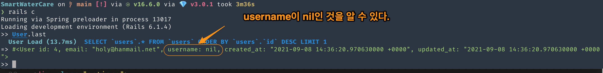
Figure 29: devise_username
- username [controller처리]
page에서 username항목은 있지만, 실제 입력된 data가 db에는 저장되지 않는다. 이것은 우리가 처리해 줘야 한다. db table을 만들 때, username이라는 항목을 만들었고, page에서도 항목을 만들었지만, controller에서는 새로만든것을 처리하지 않고 있다. 이것을 devise에서는 strong parameter라는 항목으로 소개를 했다. devise의 코드를 가져와서 application controller에 붙인다.
before_action :configure_permitted_parameters, if: :devise_controller?
protected
def configure_permitted_parameters devise_parameter_sanitizer.permit(:sign_up, keys: [:username]) end
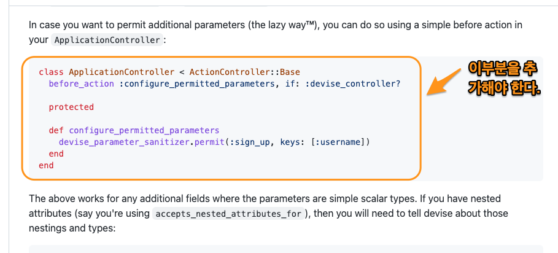
Figure 30: devise controller
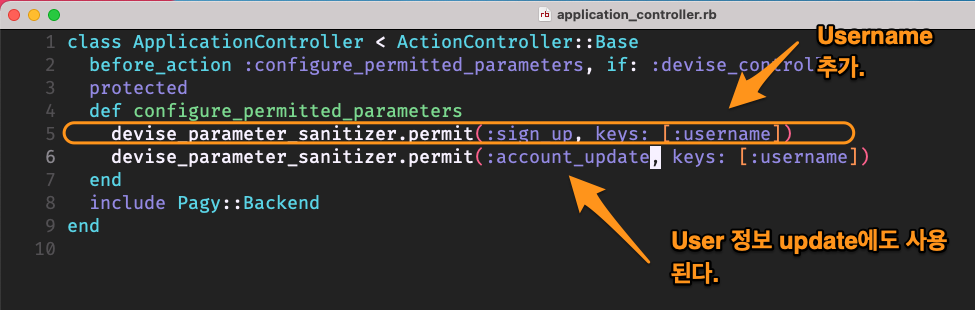
Figure 31: devise_controller
- update에관한 처리(view)
회원가입시 username항목에 대한 controller의 처리를 했다. 그런데 update시에 추가한 username도 처리해야 한다. view에서 update하는 곳에 username항목을 넣워야 한다. /devise/registration/edit.html.erb에 추가한다. 이렇게 하면 나중에 사용자 정보 수정시 username도 수정 가능하다.
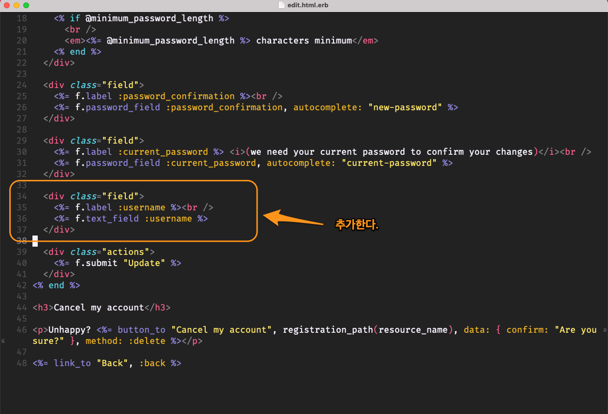
Figure 32: devise_registration
- 수정 화면
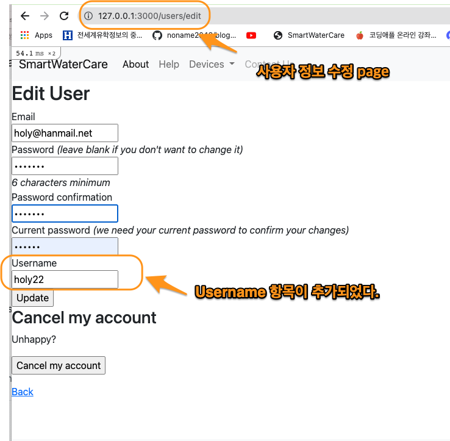
Figure 33: devise_user edit
수정 결과 (DB 저장 여부)
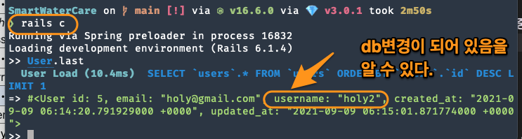
navigation에 사용자 이름 출력
username이라는 항목을 devise에 추가하면서, 회원가입시, 회원정보 수정시 view,controller에 알맞는 처리를 해주었다. 마지막으로 사용자가 login시에, navigation bar에 사용자 이름과 logout 아이콘이 나오게 해야 한다. 지금은 logout 아이콘만 나온다. 이것을 추가하기 위해서는 navigation code가 있는 _header.html.erb를 수정한다.
19) page 접근권한
devise에서 제공하는 것 중 유용한게 있다. 특정 page에 접근하려고 할때 login이 되어 있지 않다면 접근할 수 없게 할 수 있다. 이걸 하려면, controller에 before_action을 거는 것이다. before action으로, authentication_user!를 사용하면 해당 controller가 관할하는 pages들에 대해서 login하지 않았다면 접근 할 수 없다. only와 except라는 option으로 세부 조정도 가능하다.
before_action :authenticate_user! : 모든 page에 접근할 수 없다. before_action :authenticate_user!, except: :index # index빼고 실행 before_action :authenticate_user!, only: :show # show만 실행
before_action :authenticate_user!, only: [:index, :show] before_action :authenticate_user!, only: ["index", "show"]
#퍼센트 기법을 사용하면 아래와 같이도 가능 before_action :authenticate_user!, only: %i[index show] before_action :authenticate_user!, only: %w[index show]
20) devise page 꾸미기 (bootstrap) –delay: 나중에 bootstrap css를 다시 공부하고 난 후에 한다.
devise에서 제공하는 page는 별로 이쁘지 않다. 수정이 필요하다. 완벽한 수정전에 우선 중앙 정렬부터 하자. 중앙 정렬은 <div class=container>로 묶어주면 된다.
수정할 page를 어떤게 있고, 어떻게 찾을수 있는가? 찾는법: rails routes에서 page와 url mapping을 볼 수 있다.
- registration page(회원가입 page): /users/sign_up -> view/devise/registration/new.html.erb
- login page (로그인 page): users/sign_in -> views/devise/session/new.html.erb
- 회원 정보 수정 ->views/devise/registration/edit.html.erb
(1) 로그인 page수정
<h2>Panels with Contextual Classes</h2> <div class="panel panel-primary"> <div class="panel-heading">Panel with panel-primary class</div> <div class="panel-body">Panel Content</div> </div>
6 rails_admin 관리자 페이지 만들기
- (1) gem 'rails_admin', '~> 2.0'' in gemfiles
- (2) bundle install
(3) rails g rails_admin:install
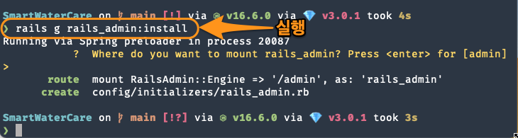
- (4) server restart 후 동작확인 (동작은 완료) url/admin으로 들어가면 접속된다.
(5) [문제점]너무 느린 문제 /admin접속 시에 너무 느리다. 해결책은 dashboard의 statistics를 false로 해서 처음 접속시 시간이 많이 걸리는 통계를 건너뛴다.
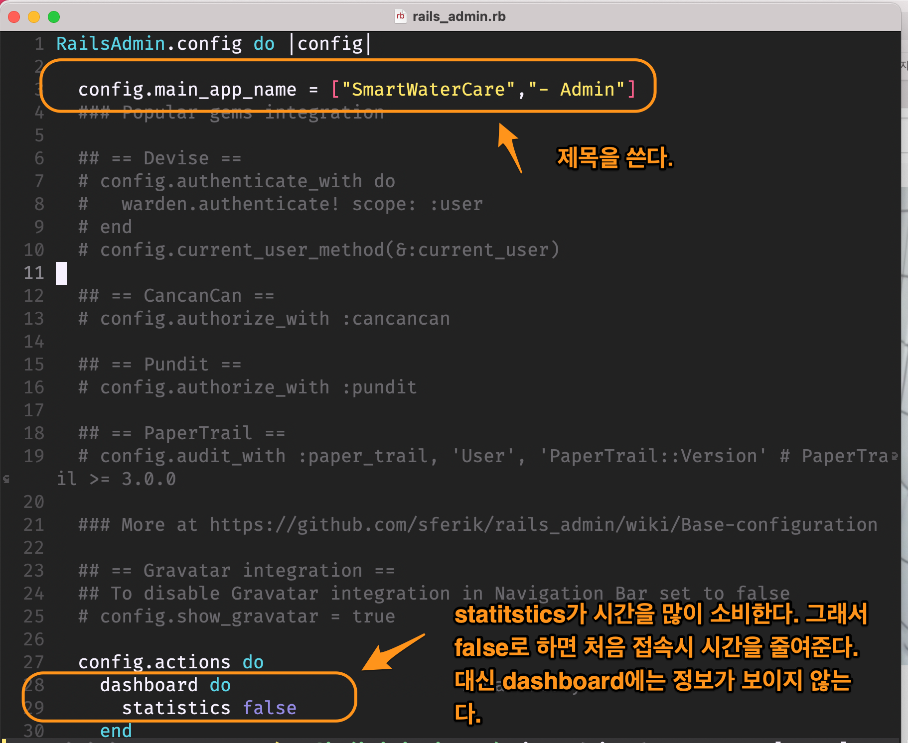
(6) 계정에 admin column추가
devise gem에선 User라는 model을 만들고 table도 만들었다. 이 users table에는 사용자의 기본 정보들을 column으로 갖는다. rails-admin페이지는 현재 아무나 접근할 수 있기 때문에, devise gem에서 만든 user table에 admin이라는 column을 추가해서, 이 값이 true인 admin 사용자만 접근할 수 있게 처리해야 한다.
admin column을 갖는 migration을 만든다.
rails generate migration add_admin_to_users admin:boolean을 실행하면 admin:boolean이라는 column을 추가하라는 migration이 만들어진다. 이 migration을 좀 수정할 필요가 있다. add_admin_to_users라는 migration에서 default:false로 처리한다.
- rails db:migrate 를 실행한다.
(7) 특정 계정에 admin설정하기
rails c 로 들어가서 특정 user를 찾거나, user를 만든다. 나는 user를 만들고 만든 user에게 admin권한을 주겠다. User.create(username: "admin", email: "admin@pnc.co.kr", password:"1234567", password_confirmation:"1234567") 로 실행한다. 만들때 admin을 true를 해줘야 하는데 못해준 경우, 다음과 같이 User.find_by로 찾는다. t=User.find_by(email:admin@pnc.co.kr) t.update_attribute :admin,true
참고: find는 id로 찾는다. find_by와 where은 attribute로 찾는다. find_by는 레코드 1개를 가져온다. where은 여러줄을 가져온다.
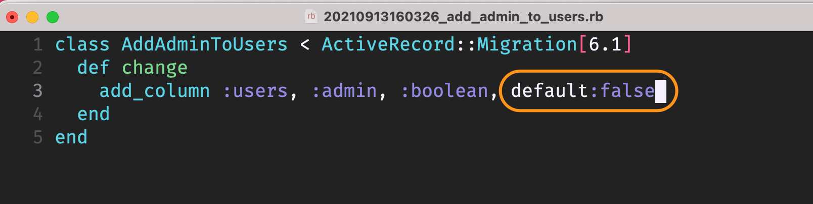
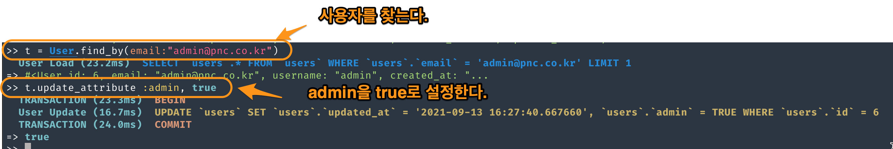
Figure 38: admin3
(8) routing table 수정
아래와 같이 routing table을 수정한다. 이렇게 하면 /admin에 접근할 수 있다.
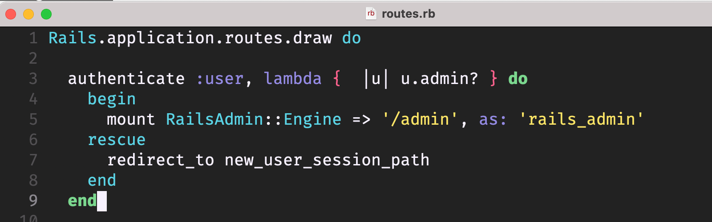
Figure 39: admin4
/admin에는 url로 접근할 수 있지만, navigation에는 링크가 없기 때문에 접근할 수 없다. link를 추가한다. user_signed_in중에서 admin인 경우만, 접속할 수 있는 link를 하나 만든다.
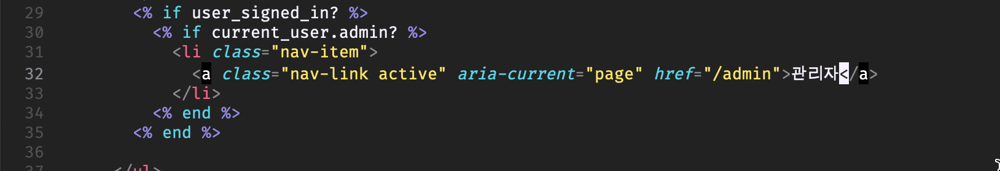
Figure 40: admin5
7 table 만들기와 pagenation 구현하기
- pagination을 만들기 위해서는 pagy라는 gem을 사용한다. https://kbs4674.tistory.com/72 참조.
- 우선 db에 table이 있다고 가정한다.
- view에서 table을 출력하고 있다고 가정한다.
7.1 pagy 설정
- gem pagy를 추가한다.
- bundle을 한다.
- application_controller에 pagy::backend를 추가한다. (application controller에 작성한다는 것은 모든 controller에 적용된다는 뜻)
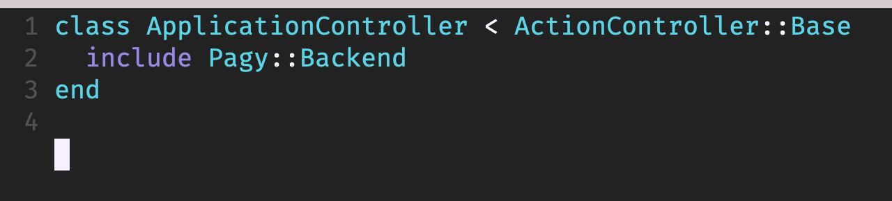
Figure 41: pagy1
- app/helpers/application_helpers.rb에 pagy::frontend를 추가한다.
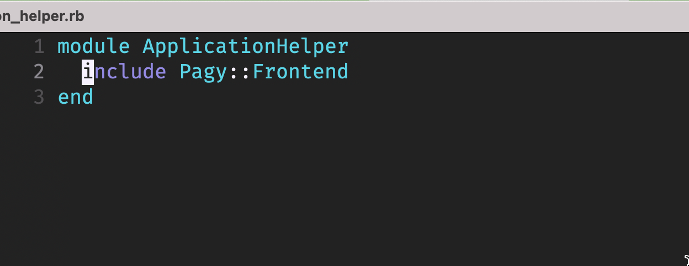
Figure 42: pagy2
7.2 pagy 적용
적용하고자하는 controller/action 에 다음과 같이 설정한다. applicationController에서 pagy::backend를 설정했기 때문에 pagy()를 실행할 수 있다.
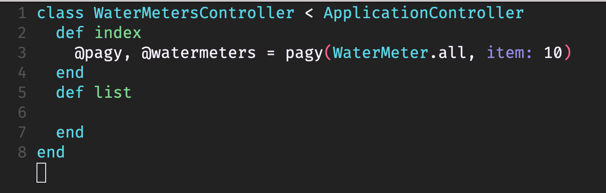
Figure 43: pagy3
view에 pagy_nav()를 적용시켜 본다. 이걸 적용할 때 주의할 사항이 있다. pagination은 table 아래에 위치해야 하고, <%== pagy_nav(@pagy) %> 과 같이 입력하던가, <%= pagy_nav(@pagy).html_safe %>를 입력해야 한다. 그런데, 이렇게 입력하면 이쁘지가 않다. bootstrap을 적용해야 하는데, 우선 initializer/pagy.rb라는 파일을 만들고, 그 안에 bootstrap을 가져오는 코드를 넣는다.
#/config/initializer/pagy.rb require 'pagy/extras/bootstrap'
그리고 view에서 <%= pagy_nav(@pagy).html_safe %>대신 bootstrap이 적용된 page navigation을 사용한다.
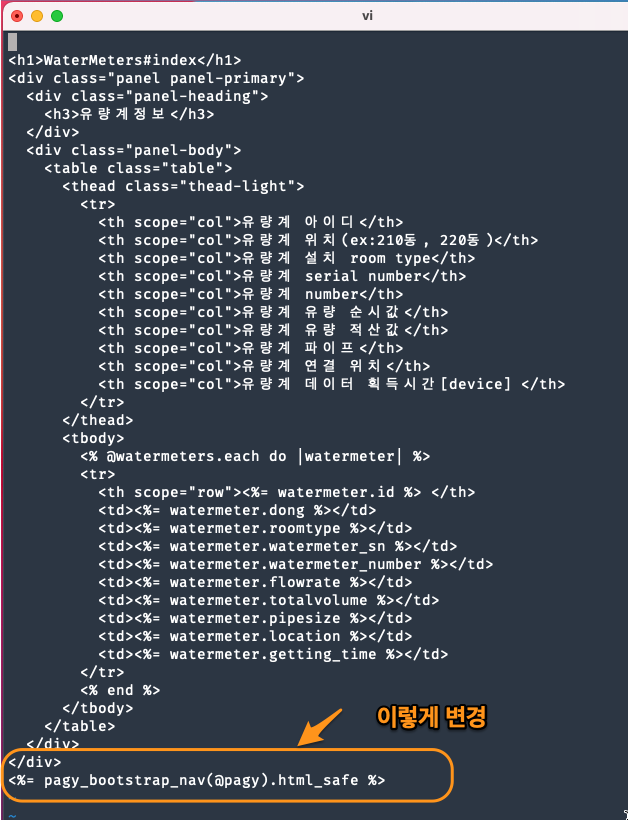
Figure 44: pagy4
7.3 pagy의 table rows 정하기
pagy에서 보여줄 table의 rows를 정할 수 있다. initializer에서 pagy.rb라는 파일이 있는데, 여기서 설정정보를 입력한다. Pagy::VARS[:items] = 10 => 10개의 row만 보여진다.
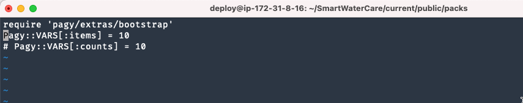
Figure 45: pagy5
7.4 table의 모양 꾸미기
pagy는 bootstrap을 추가한 버전은 이쁘지만, table자체는 이쁘지 않을 수 있다. 보통은 table을 bootstrap의 card에 넣어서 보여준다. card는 예전에는 panel이라고 했는데, bootstrap5로 오면서 card로 바꼈다. 다음을 참조한다. https://getbootstrap.com/docs/5.0/components/card/
8 table 갱신하기
table에 있는 값을 주기적으로 갱신 시키는 가장 간단한 방법은 refresh button을 만들고 table을 갱신하거나, 혹은 settimeout으로 주기적으로 refresh를 할 수 있다. 아래는 js로 구현한것이고, 그냥 난 rails에서 link_to에 추가했다. bootstrap의 property를 link_to에 추가하는 법도 나와 있다. 유용한 tip이다.
8.1 button refresh
$(document).ready(function () { $("button").click(function () { location.reload(true); alert('Reloading Page'); }); });
<!– <script> setTimeout("location.reload();",10000); </script> –>
rails
<%= link_to 'refresh', pressure_path, { :class => 'btn btn-secondary my-2', 'data-toggle' => 'tooltip', 'data-placement' => 'bottom', :title => 'button or auto?'} %>
8.2 check box refresh (주기적 refresh)
흔히 생각하길, js코드에서 checkbox를 보고 on이라면 setTimeout("location.reload();,10000)하고 off일경우 아무것도 안처리하는 코드를 넣으면 될 것이라고 생각한다. 그러나 제대로 동작하지 않는다. 가정을 해보자. , html코드에서 checked되어 있고, js로 아래에 if(checked) setTimeout else noting.이라고 되어 있다면, 계속 setTimeout이 실행된다. 만일 사용자가 off로 바꾸면 어떻게 되는가? off로 바꾸어도 동일하다. 왜냐면, 처리하는 eventhandler가 없기 때문이다. 그러면 eventhandler를 만들자. event handler를 어떻게 만들 것인가? eventhandler에서 무엇을 처리할 것이고 어디에 위치 시킬 것인가? 이전의 if문도 있어야 하는가? 없어야 하는가? 복잡해진다. eventhandler만 있다고 가정하자.
html에서 checkbox가 checked가 되어 있고 ,event가 발생해서 off상태가 되었을때, 아무것도 하지 않는다. 이렇게 되면 문제다. 왜냐, html은 on이기 때문에 갱신이 일어나야 하는데, 아무것도 하지 않기 때문이다.
html에서 checkbox가 uncheck가 되어 있고, event가 발생해서 on 상태가 되면 어떻게 되는가? event로 인해 setTimeout(10초)으로 인해, page를 다시 요청한다. 요청받은 html을 수행하면 기존의 html의 checkbox가 uncheck가 된다. 그런데 이것은 사용자가 on이라는 event를 발생시켜 계속 갱신하겠다는 뜻인데, 다시 html을 수행하면서 갱신하지 않겠다는 상태로 돌아간다.
이 문제를 해결하지 않고는 한개의 handler로 해결 할 수 없다. 이 문제를 다시 생각해 보자. 이 문제의 근본적인 문제는 이전 page에서 설정된 값이(사용자가 turn on/off) 다음 페이지 연결에도 필요하다는 것이다. 다음 페이지 연결시에 이전 설정값을 반영해 줘야 한다. 예를 들어서 사용자가 on이라고 설정했는데, 다음 page html은 default가 checked아니라면 화면에는 off로 나오기 때문이다. 그래서 이전 페이지 설정 정보를 html에 반영해야 한다. 이것은 흡사 login session과 비슷한 원리다. REST의 STATEFUL이란게 이런것이다. 이것을 어떻게 할 것인가? ajax를 사용해야 한다. ajax 사용법은 아래 적겠다.
다시 말하자면, check box refresh는 checkbox의 상태에 따른 refresh 설정이다. 예를 들어 on/off 버튼이 있어서 이에 따른 refresh를 결정한다고 하자. 이것은 webpage에 on/off 상태(state)가 있는 것이다. 상태가 있는 것은 상태에 따른 결정이 달라진다. 반면에 button을 눌러서 refresh하는 것은 상태가 없다. page에 상태가 없기 때문에 상태에 따른 결정을 할 필요가 없다. 즉 상태가 없는 page를 refresh한다는 건 동일한 page를 refresh하는 것과 같다. 반면에 상태가 있다는 것은 상태에 따라 refresh화면이 달라지고 동작이 달라진다고 볼 수 있다.
8.3 Ajax를 사용한 처리
ajax를 사용해야 한다고 했다. ajax는 jquery를 사용한다. js를 rails 6에서 사용하기 위해서는 webpacker에서 js를 어떻게 처리하는지 알아야 한다. js는 2가지가 있다. 외부 library package를 가져와서 사용하는 경우와 본인이 작성한 package를 사용하는 경우가 있다. 이 두 가지를 어떻게 설정하고 test하는지 먼저 알아보고, 그 다음 jquery 사용해서 ajax를 실행하는 것을 해야 한다.
webpacker js처리
css처리와 비슷하게 javascript도 pack을 만들어 사용한다. pack은 여러개 만들수 있다.
9 d3 or c3 chart or chart.js 구현하기
10 sidekiq, whenever gem 사용법
11 [부록] webpacker-bootstrap settings
- 개요
bootstrap을 적용시키는 가장 간단한 방법은 CDN을 사용하는 것이다. 그렇지 않고 본인이 만든것을 적용 할려면 webpacker를 사용해야 한다. webpacker가 하는 일은 한곳으로 js,cs, image file을 모으고, compile해서 하나의 entry file로 만드는 것이다. 만들어진 entry file을 필요한 web page에 포함시켜 사용하면 된다. entry file은 포함될 파일 목록을 가지고 있다. 참고로 webpacker가 만드는 entry파일은 ngix란 webserver가 지정한 곳으로 서비스 된다. webpacker는 목록파일을 가져와서 compile하고 최종 파일을 특정위치에 놓는다. 그리고 nginx는 특정위치를 지정해서 서비스 한다. webpacker가 목록 파일을 가져오는 위치, compile한 후 결과 파일을 올려놓는 위치, 이 모든 것이 config/webpacker.yml파일에 기술되어 있다. 또한 Nginx는 webpacker가 최종파일로 올려놓는 위치를 알아야 한다. 이 위치는 /etc/nginx/sites-enabled에서 설정한다.
11.1 css나 js, image가 저장될 폴더 정하기
page를 만들기전에 제일 먼저 할 것은 bootstrap을 사용하기 위해 bootstrap.css와 bootstrap.js를 처리하는 것이다. 나는 모든 assets를 webpacker로 관리할 예정이다. 그래서 webpacker가 모든 asset을 관리한다는 뜻으로 app/javascript의 이름을 frontend로 변경하기로 한다.
- app/javascript를 app/frontend로 변경한다.
- webpacker.yml을 수정한다.
- js를 위한 js폴더를 만든다.
- css를 위한 css폴더를 만든다.
- image를 위한 images란 폴더를 만든다.
- react를 사용한다면 components라는 폴더를 만들텐데, 난 만들지 않는다.
- 아래에 보면 channel이란 폴더가 보일텐데, 이것은 actioncable을 위한 폴더다.
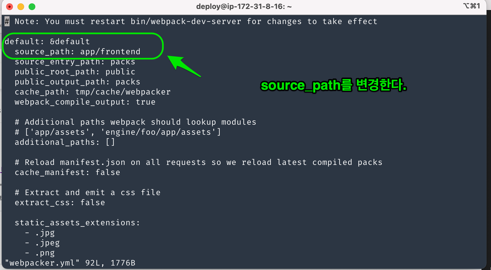
Figure 46: source_path
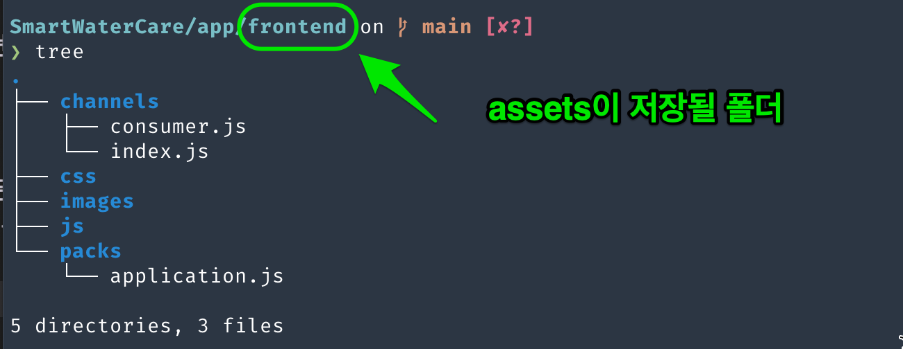
Figure 47: frontend1
11.2 pack 폴더에 있는 packing할 항목 설정하기 - pack설정
위에 app/frontend를 보면 packs라는 폴더가 보인다. packs 폴더안에 파일은 pack, entry point라고 부르는데, 하나의 entry point에는 포함될 js나 css를 지정하고 있다. 포함된 js나 css가 compile이란 과정을 통해서 최종적으로 entry file이 만들어 지고, 이것이 html에서 참조되는 방식이다. 이 entry point에 포함될 css나 js파일들은 npm이나 yarn으로 system에 설치된 js나 css도 포함시킬 수 있다는 게 특이하다. 이 말은 node package를 rails에서 사용할 수 있다는 말이다. 그래서 client에서 react 사용이 가능한 것이다. pack을 만들기 위해서는 우선, pack이 참조하는 node package나 js파일이 있다는 가정에서 출발한다. 이것이 준비되어 있을 때 pack파일에서는 이것을 지정하기만 하면 된다. 그런데 우선 참조하는 js가 2가지 종류가 있다. system에 설치된 js와 개발자가 만든 js의 2가지 종류가 있다. system에 설치된 js를 포함시키는 방법과, 우리가 만든 js를 폴더 형태로 포함하는 방식은 다르다. 물론 import로 가져오는 방식은 동일하나, node package의 경우, module화가 되어 있기 때문에 import A from B의 형태로 가져오고 app/frontend/js에 있는 폴더들은 import 경로형태로 가져온다. app/frontend 아래의 모든 folder들은 entry point를 만들기 위해 준비되어 있는 폴더와 파일이라고 보면 된다. 실제 html에서 참조는 import가 아닌 다른 형태로 참조한다. 우선 이미 작성되어 있는 application.js라는 entry point를 살펴보자.
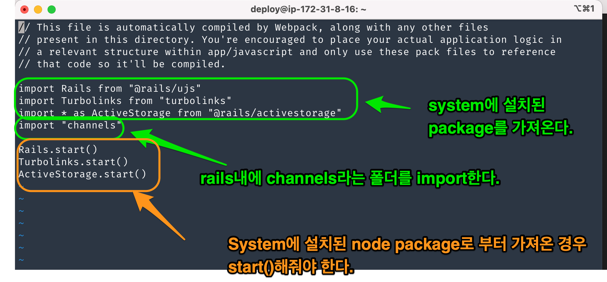
Figure 48: assets2
11.3 bootstrap을 application.js란 pack에 packing하기 [ js pack하기 ]
bootstrap을 rails에서 사용하려면, bootstrap이 system에 깔려 있던가, 아니면 down받은 bootstrap패키지를 app/frontend/js와 app/frontend/css폴더에 넣어져 있어야 한다. bootstrap은 yarn으로 system에 깔기로 한다. yarn add bootstrap yarn add @popperjs/core@^2.9.3
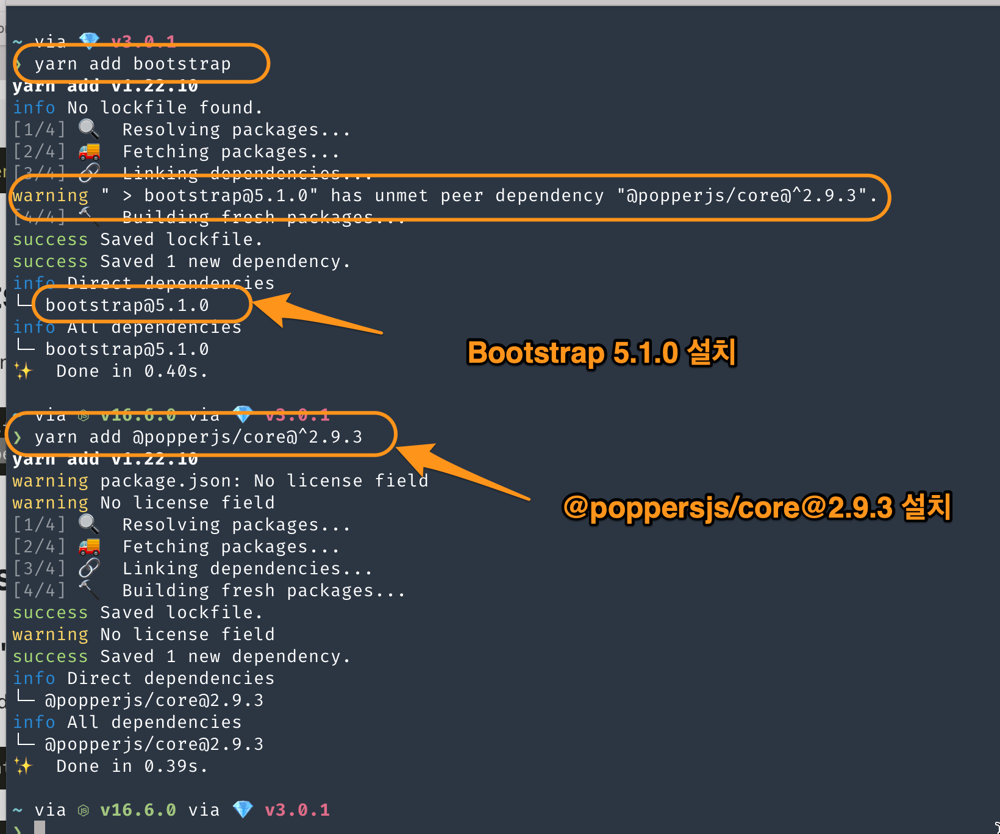
Figure 49: yarn
app/frontend/pack/application.js에 bootstrap을 packing하려고 한다. 이미 bootstrap은 system에 설치되어 있다. 설치되어 있거나, app/frontend/js에 있는 js파일들은 pack에서는 import구문으로 가져올 수 있다. 그런데 여기서는 좀 색다르게 한다. 위에서 적은 참고 site를 말한다. 여튼 /app/frontend/js/bootstrap_js_files.js라는 파일을 만들고, 거기에 bootstrap의 js를 import로 쭉 나열하고 필요하지 않은 것을 주석처리 한 후에 pack에서 bootstrap_js_files.js를 import하는 방식이다. 그대로 해보자. 여기서 base_component는 지워야 한다.
- app/frontend/js/bootstrap_js_files.js라는 파일을 만든다.
- 아래와 같이 사용할 component만 import한다. => 목록은 bootstrap을 source download받으면 목록을 알수 있다.
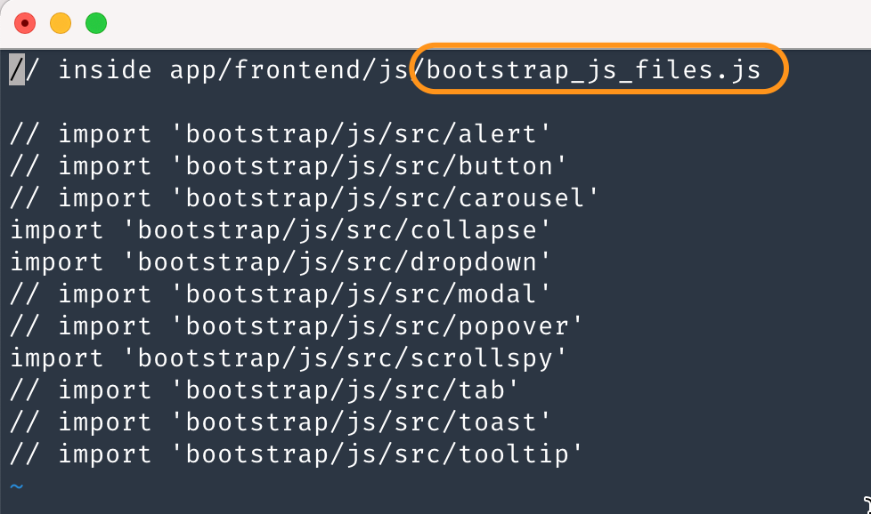
Figure 50: boot
- application.js pack에 해당 js를 import한다. 이렇게 하면 js에 대한 pack작업은 끝이 나게 된다.
Figure 51: boot2
11.4 css pack하기
- application.scss란 pack을 만들자. 해당 pack에선 bootstrap의 source파일에 있는 bootstrap.scss를 load한다. bootstrap.scss에는 사용되는 모든 css가 import되어 있다. 마치 위에서 bootstrap 의 js파일이 목록화 되어 있던 것과 비슷한 파일이다. 이 파일을 import하면 된다.
Figure 52: boot3
11.5 pack 적용하기 [ css & js ]
- pack을 만들었으면 이를 적용 하면된다. pack자체는 하나의 scss이고, js파일이다. 모든 scss를 bundling했기에 하나의 scss파일이고, 모든 js를 bundling했기에 하나의 js파일이다. 이 파일을 적용하는 것은 view에서 page에 해당하는 html.erb에 보면, <head> 태그 내부에 삽입할 수도 있고, layouts/application.html.erb안에 있는 <head>안에 삽입할 수도 있다. layout은 모든 page에 공통으로 적용되는 바탕이 되는 html이기 때문이다. 삽입하는 방법은 stylesheet_pack_tag, javascript_pack_tag를 넣는 방식이다.
<!DOCTYPE html> <html> <head> <title>Myapp</title> <meta name="viewport" content="width=device-width,initial-scale=1"> <%= csrf_meta_tags %> <%= csp_meta_tag %>
<!– Warning !! ensure that "stylesheet_pack_tag" is used, line below –> <%= stylesheet_pack_tag 'application', media: 'all', 'data-turbolinks-track': 'reload' %> <%= javascript_pack_tag 'application', 'data-turbolinks-track': 'reload' %> </head>
<body> <%= yield %> </body> </html>
Figure 53: boot4
11.6 test하기
- 1) rails assets:clobber
- 2) rails webpacker:compile
- 3) rails server
Figure 54: clobber
Figure 55: compile
11.7 server에 적용 확인
server에 적용되는지 확인하기 위해서 cap production deploy를 한다. 실제 적용되지 않는다. 우선 server에 접속해서 yarn으로 package 설치 작업은 root에서, myapp에서 2번 설치했다. server에 접속하면 404에러가 4개가 떴다. /config/environments/production.rb에서 config.assets.digest = true로 설정하니 에러가 2개 뜬다. 해결하기 위해서 config.public_file_server.enabled configures = true를 했더니 별 반응 없다. 최종적으로 nginx의 /etc/nginx/sites-enabled/에 있는 설정파일에서 pack의 위치(location block)을 명시적으로 지정해주고 설정을 변경했더니 동작했다.
Figure 56: nginx_solved
12 [부록] turbolink와 jquery
turbo link와 jquery는 충돌이 난다. 그래서 둘중 하나만 선택해야 한다. 난 jquery를 선택했다.
13 [부록] ajax 사용법 1
- ajax 개요
- ajax는 page를 다운로드 한 이후에 server에게 data를 요청하고 받을 수가 있다.
- page 갱신의 경우: 예를 들면 page의 table이나 graph의 data를 갱신해야 하는 경우, page를 refresh를 시키는 방법은 구식이다. 이것은 server에서 주기적으로 page를 전송하는 형태이기 때문이다. 처음에만 page를 받아오고, 그 다음 부터는 ajax를 주기적으로 실행 시켜서 server로 부터 받아온 data를 보여주는 식으로 해야 한다.
ajax 사용법
ajax는 server에 data를 요청한다. data를 받고 받은 데이터를 html로 보여주어야 한다. 어떻게 할 것인가? 또한 주기적으로 보여줘야 한다. 어떻게 할것인가? 여러부분으로 나눠야 할 듯하다.
[ view 영역 처리 ]
테이블이나 graph같은 것을 주기적으로 갱신 시키는 일은 html에서 하지 않는다. html에서는 table이나 graph를 둘러싼 div에 id를 정해놔야 한다. 왜냐면 갱신 시키는 javascript에서 해당 id를 참조하기 때문이다. 왜 참조하는가? 해당 id로 정해진 div영역을 다시 html으로 만들어서 append할 것이기 때문이다. 여튼 처음 사용자로 부터 요구로 인해 받아지는 page에는 해당 그래프나 테이블을 포함하는 부모 tag만 있는다. 그래서 html만 다운 받으면 그 부분은 아무것도 표시되지 않을 것이다. html 파싱과 렌더링이 끝난후에 js가 수행되는데, js는 js.append를 사용해서 그 표시가 되지 않는 부모 tag의 자식에 html을 붙일 수 있다.
[ javascript 처리 ]
javascript에서는 여러가지를 해야 한다.
- 주기적 작업
- server와 data통신 시 data를 주고 받는 작업.
- 받은 data를 처리시 html을 append
$(function() { timer = setInterval( function () { $.ajax ({ "url" : "[받아올 내용이 있는 URL]", // ----- (1) cache : false, success : function (html) { // ----- (2) [받아온 내용을 처리할 부분] // ----- (3) [받아온 내용은 변수 html로 전달] } }); }, 30000); // 30초에 한번씩 받아온다. });- server단 처리
server단에서는 controller에서 ajax와 통신을 한다. db에서 받은 data를 전달하고, 그 외에 client에서 보낼 data가 있다면 전송하는 작업을 해야 한다.
14 [부록] ajax 사용법 2
14.1 실제 구현
개요
ajax를 사용하는 상황을 보여주려 한다. 현상황은 db가 있고, 이 db의 내용을 table로 보여준다. db의 데이터는 외부로 부터 계속 끊임없이 저장되기 때문에, 우리는 주기적으로 갱신해서 보여줄 필요가 있다. 그래서 view에는 switcher라는 check box를 달았다. switcher checked되면 자동갱신, uncheck면, 자동 갱신을 하지 않는다.또한, refresh 버튼도 만들었다. refresh button을 누르면 한차례 갱신을 한다. 이것을 어떻게 구현할 것인가?
- [첫번째 방식] switcher를 구현 하기 위해서, js로 event handler를 달았다. check가 되어 있으면, setInterval로 주기적인 page reload를 한다. refresh button도 동일하다. reload방식을 사용했다. button을 누르면 client에서 page를 요청하고 server가 client로 page를 보내주는 방식이다. 그럴싸하다. 그런데 여기엔 문제가 있다.
- [문제점과 해결책]
reload 방식은 우선 화면이 깜박이는 문제가 있다. client가 page를 다시 요청하고 받은 page를 browser가 화면에 다시 보여주기 때문이다. 더 큰 문제는 switcher의 상태가 유지 되지 않는다는 것이다. 예를 들어보자. 사용자가 switcher(checkbox)를 turn on했다. 그러면 다시 off가 된다. 왜냐면 page를 다시 다운 받는데, down받은 html문서에는 checkbox는 off상태이기 때문이다. 문제가 있다. 여기서 다른 조건문을 여러개 써서 해결할 수는 있다. 그런데, 다음같은 경우는 어떨까? table page에서 다른 page로 이동한다. 그리곤 다시 table page로 돌아온다. switcher는 on상태일까? off상태일까? 답은 off상태이다. 이 문제는 근본적인 문제를 얘기한다. page의 어떤 요소에 대한 상태정보를 server가 유지하지 못하기 때문이다. http통신이 원래 그렇다. page가 가진 어떤 상태를 다른 상태가 알수없다. 연결을 끊어버리니…page간의 상관관계가 없다. 그래서 page사이를 이동하면 특정한 상태를 유지하려는 시도가 있다. cookies다. session도 cookies의 일종이다. login하는 것을 생각하면 된다. login할 때 사용자 정보가 다른 page로 이동해도 유지되는 것도 state를 유지하는 방식이다. 우리가 해결해야 하는 것은 상태를 유지시켜야 하는 작업이다.(stateful해야 한다.) 말을 두서 없이 썼다. 다시 단계별로 설명해 보겠다.
- (1) 처음 table page로 방문한다.
- (2) browser는 table page의 html문서를 다운받는다.
- (3) browser는 html문서를 parsing해서 dom을 만든다. (이 때 switcher의 상태는 off :왜냐? html에 하드코딩되어 있으니까.)
- (4) browser는 html문서를 화면에 보여준다.
- (5) 사용자가 switcher를 turn on한다.
- (6) browser의 js가 switcher의 상태에 반응을 한다. reload를 요청한다.
- (7) browser는 html 문서를 다운받는다.
- (8) browser는 다시 parsing한다. (이 때 switch의 상태는 off다. 왜냐 다시 받는 html문서에 switcher는 off로 하드코딩되어 있으니까)
- 결론: 사용자가 switcher를 on해도 다시 다운받는 html문서에는 off로 되어 있기 때문에 사용자의 on action은 무시된다. 이를 해결하려면, server 단에서(controller)에서 switcher의 상태를 유지하고 있어야 한다. 그값을 기반해서 html문서의 switcher의 상태를 check할 필요가 있다. 그러면 이것을 어떻게 처리할 것인가? 내가 생각하는 가장 좋은 방식은 login session을 이용하는 것이다. 사용자가 login을 할때 session을 만들텐데, 그 session에 swticher의 상태정보를 저장하는 방식이다. 이런식으로 구현하려면 우선 login처리가 되어야 한다. 그런데 아래 방식은 login을 고려하지 않았다. login을 고려한 방식은 쓰지 않은 이유는 내가 지금 login처리과정을 모르기 때문이다.
14.2 login을 고려하지 않은 방식
(1) ajax를 사용하기 위해서 jquery를 설치 한 후 application.js에 import하자. 그런후, application.html.erb에 적용
- yarn add jquery
Figure 57: ajax1_1
Figure 58: ajax1_2
- import 위치 확인
Figure 59: ajax1_3
import 'jquery/dist/jquery.js' 로 하면 된다. 이렇게 하면 안된다. import 'jquery/src/jquery.js'로 해야 에러가 나지 않는다.
- import
Figure 60: ajax1_4
전체 page에 jquery를 적용할 것이다. bootstrap보다 상위에 import한다.
Figure 61: ajax1_5
(2) ajax를 이용하는 js pack을 만든다. (뼈대만)
water_meters_index, pressure_sensors_index라는 pack을 2개 만든다. 2개의 code는 거의 동일하다. 나중에 refactoring이 필요하겠지만, 우선은 그대로 간다.
- packs
Figure 62: ajax1_7
이 pack에서는 2가지를 한다. 맨처음 html을 download 받을때, switcher라는 checkbox의 check여부에 따른 동작 구현, 두번째로 사용자가 이미 download되어 browser에 보여지는 checkbox에 대한 event handler를 구현인데. 하지만 미완성이다. 단지 동작된다는 것만 확인한다. 완성하려면, 전체 동작에 맞춰 server와 view단이 어떻게 동작하는 지 이해해야 하기 때문이다.
(3) 전체 동작에 대한 이해 (stateful)